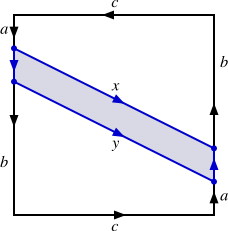
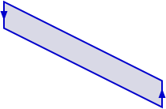

Misalkan \(X\) suatu ruang topologi, \(Y\) suatu himpunan, dan \(p: X \to Y\) suatu surjeksi. Definisikan relasi \(\sim_p\) pada \(X\) dengan \(x \sim_p y\) jika dan hanya jika \(p(x)=p(y)\text{.}\) Buktikan bahwa \(\sim_p\) merupakan relasi ekuivalensi.
2.
Misalkan \(X\) himpunan bilangan real dengan topologi standar dan misalkan \(p: X \to \{a,b,c\}\) didefinisikan oleh
\begin{equation*}
p(x) = \begin{cases}a \amp \text{ jika } x \lt 0 \\ b \amp \text{ jika } x = 0 \\ c \amp \text{ jika } x \gt 0. \end{cases}
\end{equation*}
Apakah topologi kuosiennya?
3.
Definisikan relasi ekuivalensi \(\sim\) pada \(\R^2\) dengan \((x_1,y_1) \sim (x_2,y_2)\) jika dan hanya jika \(x_2 - x_1 \in \Z\) dan \(y_2 - y_1 \in \Z\text{.}\)
(a)
Buktikan bahwa \(\sim\) merupakan relasi ekuivalensi pada \(\R^2\text{.}\)
(b)
Ruang kuosien ini merupakan ruang yang telah dikenal. Tentukan ruang tersebut dan jelaskan mengapa ruang itu merupakan ruang kuosiennya.
4.
Berikan contoh suatu surjeksi kontinu yang bukan pemetaan kuosien.
5.
Misalkan \(X\) suatu ruang topologi dan misalkan \(A\) suatu subruang dari \(X\text{.}\) Definisikan relasi \(\sim\) pada \(X\) dengan \(x \sim y\) jika dan hanya jika \(x=y\) atau \(x,y \in A\text{.}\) Dalam hal ini, ruang kuosien dinotasikan dengan \(X/A\) (jika \(A\) tak kosong, bayangkan ruang ini diperoleh dengan menciutkan subruang tersebut menjadi satu titik dan membiarkan semua titik lainnya tetap terpisah; jika kosong, tidak ada titik yang diciutkan). Deskripsikan setiap ruang kuosien berikut.
(a)
\(X\) adalah selang tertutup \([0,1]\) dalam \(\R\) dan \(A = \{0,1\}\text{.}\)
Misalkan \(p: X \to Y\) didefinisikan oleh \(p(1)=a\text{,}\)\(p(2) = a\text{,}\)\(p(3)=b\text{,}\) dan \(p(4) = c\text{.}\) Tentukan topologi kuosien \(\tau_p\) pada \(Y\) yang ditentukan oleh fungsi \(p\text{.}\)
(b)
Misalkan \(q : X \to Y\) didefinisikan oleh \(q(1)=c\text{,}\)\(q(2) = c\text{,}\)\(q(3) = b\text{,}\) dan \(q(4) = a\text{.}\) Tentukan topologi kuosien \(\tau_q\) pada \(Y\) yang ditentukan oleh fungsi \(q\text{.}\)
(c)
Apakah ruang \((Y, \tau_p)\) dan \((Y, \tau_q)\) homeomorfik? Jika ya, tuliskan suatu homeomorfisme tertentu dan jelaskan mengapa pemetaan Anda merupakan homeomorfisme. Jika tidak, jelaskan alasannya.
7.
Misalkan \(D^2 = \{(x,y) \in \R^2 \mid x^2+y^2 \leq 1\}\) adalah cakram satuan tertutup dalam \(\R^2\) dengan topologi standar, dan misalkan \(S^1 = \{(x,y) \mid x^2+y^2 = 1\}\) adalah batas \(D^2\text{.}\) Deskripsikan ruang kuosien \(D^2/\ssim\) untuk setiap relasi ekuivalensi berikut. Untuk setiap butir, misalkan relasi tersebut adalah relasi ekuivalensi yang dibangkitkan oleh identifikasi yang dinyatakan, tanpa identifikasi tambahan. Misalkan \(x = (s_1,t_1)\) dan \(y = (s_2,t_2)\text{.}\)
(a)
\(x \sim y\) jika \(s_1=s_2\) untuk \(x, y\) dalam \(D^2\text{.}\)
(b)
\(x \sim y\) jika \(s_1=s_2\) untuk \(x, y\) dalam \(S^1\text{.}\)
(c)
Identifikasi pembangkitnya adalah \(x \sim y\) apabila \(y=-x\text{,}\) yakni \((s_2,t_2)=(-s_1,-t_1)\text{,}\) untuk titik \(x,y\) dalam \(D^2\text{.}\)
8.
Misalkan \(X = I \times I\text{,}\) dengan \(I\) selang \([0,1]\) yang diberi topologi metrik standar, dan definisikan relasi ekuivalensi pada \(X\) dengan \((s_1, t_1) \sim (s_2,t_2)\) jika dan hanya jika \((s_1,t_1)=(s_2,t_2)\) atau \(t_1 = t_2 \gt 0\text{;}\) ketentuan pertama menjamin refleksivitas pada seluruh \(X\text{.}\)
(a)
Deskripsikan ruang kuosien \(X/\ssim\) beserta topologi kuosiennya.
(b)
Tunjukkan bahwa \(X/\ssim\) bukan ruang Hausdorff.
9.
Misalkan \(X\) suatu himpunan tak kosong dan misalkan \(p\) suatu unsur tetap dalam \(X\text{.}\) Misalkan \(\tau_p\) topologi titik tertentu dan \(\tau_{\overline{p}}\) topologi titik yang dikecualikan pada \(X\text{.}\) Artinya,
\(\tau_{p}\) adalah koleksi subhimpunan dari \(X\) yang terdiri atas \(\emptyset\text{,}\)\(X\text{,}\) dan semua subhimpunan dari \(X\) yang memuat \(p\text{.}\)
\(\tau_{\overline{p}}\) adalah koleksi subhimpunan dari \(X\) yang terdiri atas \(\emptyset\text{,}\)\(X\text{,}\) dan semua subhimpunan dari \(X\) yang tidak memuat \(p\text{.}\)
Pembuktian bahwa topologi titik tertentu dan topologi titik yang dikecualikan benar-benar merupakan topologi dibahas dalam Latihan 9 dan Latihan 10. Misalkan \(\sim\) relasi ekuivalensi pada \(\Z\) yang didefinisikan oleh \(x \sim y\) jika dan hanya jika \(x \equiv y \pmod{3}\text{.}\) Deskripsikan ruang kuosien \(\Z/\ssim\text{,}\) lalu tentukan, disertai justifikasi, topologi kuosien pada \(\Z/\ssim\) ketika
(a)
\(\Z\) diberi topologi \(\tau_{p}\) dengan \(p = 1\text{.}\)
(b)
\(\Z\) diberi topologi \(\tau_{\overline{p}}\) dengan \(p = 1\text{.}\)
10.
Dalam mengembangkan teknik menggambar perspektif, para seniman Renaisans perlu memperhitungkan satu titik di tak hingga untuk setiap arah garis-garis sejajar. Gagasan ini menghasilkan geometri yang memperluas konsep bidang real. Geometri baru tersebut adalah bidang proyektif real \(\mathbb{R}P^2\text{,}\) yang dapat dipandang sebagai ruang kuosien dari \(\R^3 \setminus \{(0,0,0)\}\) menurut relasi \(\sim_P\text{,}\) dengan \((x_1,x_2,x_3) \sim_P (y_1,y_2,y_3)\) dalam \(\R^3 \setminus \{(0,0,0)\}\) jika dan hanya jika terdapat bilangan real tak nol \(k\) sedemikian sehingga \(y_1 = kx_1\text{,}\)\(y_2 = kx_2\text{,}\) dan \(y_3 = kx_3\text{.}\) Dalam bidang proyektif, setiap dua garis proyektif yang berbeda berpotongan di tepat satu titik, dan semua garis sejajar dengan arah yang sama berbagi titik di tak hingga yang sama, sebagaimana garis-garis tersebut tampak bertemu dalam penglihatan kita.
(a)
Tunjukkan bahwa \(\sim_P\) merupakan relasi ekuivalensi.
(b)
Berikan deskripsi geometris tentang unsur-unsur ruang kuosien \(\mathbb{R}P^2\text{.}\)
(c)
Terdapat cara lain untuk memvisualisasikan \(\mathbb{R}P^2\text{.}\) Sebagai contoh, jelaskan mengapa bidang proyektif real \(\mathbb{R}P^2\) homeomorfik dengan ruang kuosien \(S^2/\ssim\) dari \(S^2 = \{(x,y,z) \in \R^3 \mid x^2+y^2+z^2 = 1\}\text{,}\) dengan \(\sim\) mengidentifikasi titik-titik berseberangan secara diametral (titik-titik antipodal) pada \(S^2\text{.}\) Anda tidak perlu memberikan bukti formal, tetapi harus memberikan penjelasan yang meyakinkan.
(d)
Karena kita mengidentifikasi titik-titik antipodal pada \(S^2\) dalam ruang \(S^2/\ssim\text{,}\) kita dapat memandang ruang ini dengan cara lain. Jika \(P\) suatu titik pada \(S^2\) yang tidak terletak pada ekuator, maka titik antipodalnya juga tidak terletak pada ekuator. Jadi, kita dapat memandang \(S^2/\ssim\) sebagai hemisfer atas beserta ekuatornya, dengan pasangan titik antipodal pada ekuator diidentifikasi, seperti diperlihatkan di sebelah kiri dalam Gambar 16.12.
Dengan memproyeksikan titik-titik pada hemisfer ke bidang \(xy\text{,}\) kita dapat merepresentasikan \(S^2/\ssim\) sebagai cakram dengan pasangan titik antipodal pada batasnya diidentifikasi, seperti tampak di bagian tengah Gambar 16.12. Gunakan gambaran terakhir ini untuk menjelaskan mengapa \(\mathbb{R}P^2\) dapat direalisasikan sebagai persegi dengan pasangan sisi berhadapan diidentifikasi dalam arah berlawanan, seperti tampak di sebelah kanan Gambar 16.12.
(e)
Bidang proyektif \(\mathbb{R}P^2\) merupakan objek yang rumit — ruang ini tidak dapat tertanam dalam \(\R^3\text{,}\) sehingga sulit divisualisasikan. Bidang proyektif merupakan permukaan yang tak dapat diorientasikan dan berperan penting dalam klasifikasi permukaan — lebih tepatnya, setiap permukaan tertutup yang terhubung homeomorfik dengan permukaan bola, jumlah terhubung dari sejumlah berhingga torus, atau jumlah terhubung dari sejumlah berhingga bidang proyektif real. Dalam bagian latihan ini, kita melihat bagaimana bidang proyektif itu sendiri diperoleh dengan merekatkan pita Möbius pada sebuah cakram sepanjang batasnya (bayangkan menjahit batas pita Möbius pada keliling cakram).
(i)
Mulailah dengan model \(\mathbb{R}P^2\) yang diperlihatkan di sebelah kiri dalam Gambar 16.13. Partisi objek ini menjadi tiga bagian seperti diperlihatkan di sebelah kanan dalam Gambar 16.13. Jelaskan mengapa daerah berarsir pada gambar tengah, yang dipisahkan di sebelah kanan dalam Gambar 16.13, merupakan pita Möbius.


Gambar16.13.Membagi bidang proyektif real.
(ii)
Ruang \(S\) yang tersisa setelah kita membuang pita Möbius dari \(\mathbb{R}P^2\) diperlihatkan di sebelah kiri dalam Gambar 16.14. Dua ruang berikutnya homeomorfik dengan \(S\text{.}\) Deskripsikan homeomorfisme yang menghasilkan kedua ruang tersebut dari \(S\text{.}\) Lalu jelaskan bagaimana \(\mathbb{R}P^2\) diperoleh dengan merekatkan pita Möbius pada sebuah cakram sepanjang batasnya.
\begin{equation*}
\xrightarrow{f}
\end{equation*}
\begin{equation*}
\xrightarrow{g}
\end{equation*}
Gambar16.14.Mengenali ruang \(S\text{.}\)
11.
Misalkan \(X = \R^2\) dengan topologi standar, dan misalkan \(Y = \{x \in \R \mid x \geq 0\}\) dengan topologi standar. Misalkan \(f: X \to Y\) didefinisikan oleh \(f((x,y)) = x^2+y^2\text{.}\)
(a)
Tunjukkan bahwa \(f\) merupakan fungsi kontinu dan surjektif.
(b)
Buktikan bahwa ruang kuosien \(X^{*}\) dari \(X\) yang ditentukan oleh \(f\) homeomorfik dengan \(Y\text{.}\)
12.
Misalkan \((X,\tau)\) suatu ruang topologi. Suatu subruang \(A\) dari \(X\) disebut retrak dari \(X\) (atau dikatakan bahwa \(X\) beretraksi ke \(A\)) jika terdapat fungsi kontinu \(r : X \to A\) sedemikian sehingga \(r(a) = a\) untuk semua \(a \in A\text{.}\) Pemetaan \(r\) seperti ini disebut retraksi. Secara intuitif, suatu subruang \(A\) dari \(X\) merupakan retrak dari \(X\) jika kita dapat menciutkan secara kontinu (atau meretraksikan) \(X\) ke \(A\) tanpa memindahkan satu pun titik dalam \(A\text{.}\) Jenis retrak tertentu, yaitu retrak deformasi, berperan penting dalam topologi aljabar.
(a)
Tunjukkan bahwa setiap ruang tak kosong memiliki suatu titik sebagai retrak.
(b)
Tunjukkan bahwa \(\{-1,1\}\) merupakan retrak dari \(\R \setminus \{0\}\text{.}\)
(c)
Tunjukkan bahwa setiap retraksi merupakan pemetaan kuosien.
(d)
Tunjukkan bahwa jika \(X\) Hausdorff dan \(A\) merupakan retrak dari \(X\text{,}\) maka \(A\) harus merupakan subhimpunan tertutup dari \(X\text{.}\)
13.
Untuk setiap pernyataan berikut, jawab “benar” jika pernyataan itu selalu benar. Jika pernyataan itu hanya kadang-kadang benar atau tidak pernah benar, jawab “salah” dan berikan contoh konkret yang menunjukkan bahwa pernyataan itu salah. Jika suatu pernyataan benar, jelaskan alasannya.
(a)
Misalkan \(p\) suatu surjeksi dari ruang topologi \(X\) ke himpunan tak kosong \(Y\text{.}\) Topologi kuosien pada \(Y\) merupakan topologi terbesar pada \(Y\) yang membuat \(p\) kontinu.
(b)
Misalkan \(X = [0,1]\) dengan topologi metrik Euklides dan definisikan relasi \(\sim\) pada \(X\) dengan \(x \sim y\) jika dan hanya jika \(x\) dan \(y\) keduanya rasional atau keduanya irasional. Maka ruang kuosien \(X/\ssim\) merupakan ruang dua titik dengan topologi indiskret.
(c)
Misalkan \(p\) suatu surjeksi dari ruang topologi \(X\) ke himpunan tak kosong \(Y\text{.}\) Topologi kuosien pada \(Y\) merupakan topologi terbesar pada \(Y\) yang membuat \(p\) kontinu.
(d)
Misalkan \(X = [0,1]\) dengan topologi metrik Euklides dan definisikan relasi \(\sim\) pada \(X\) dengan \(x \sim y\) jika dan hanya jika \(x\) dan \(y\) keduanya rasional atau keduanya irasional. Maka ruang kuosien \(X/\ssim\) merupakan ruang dua titik dengan topologi indiskret.
(e)
Jika \(X\) suatu ruang topologi, \(Y\) suatu himpunan, dan \(p: X \to Y\) suatu surjeksi, maka \(p(U)\) terbuka dalam topologi kuosien setiap kali \(U\) terbuka dalam \(X\text{.}\)
(f)
Jika \(\sim\) suatu relasi ekuivalensi pada ruang topologi \(X\text{,}\) maka ruang kuosien \(X/\ssim\) adalah himpunan semua kelas ekuivalensi dari \(X\) yang diberi topologi kuosien.